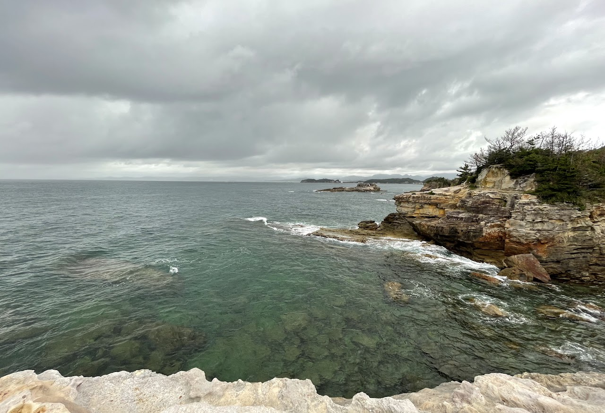
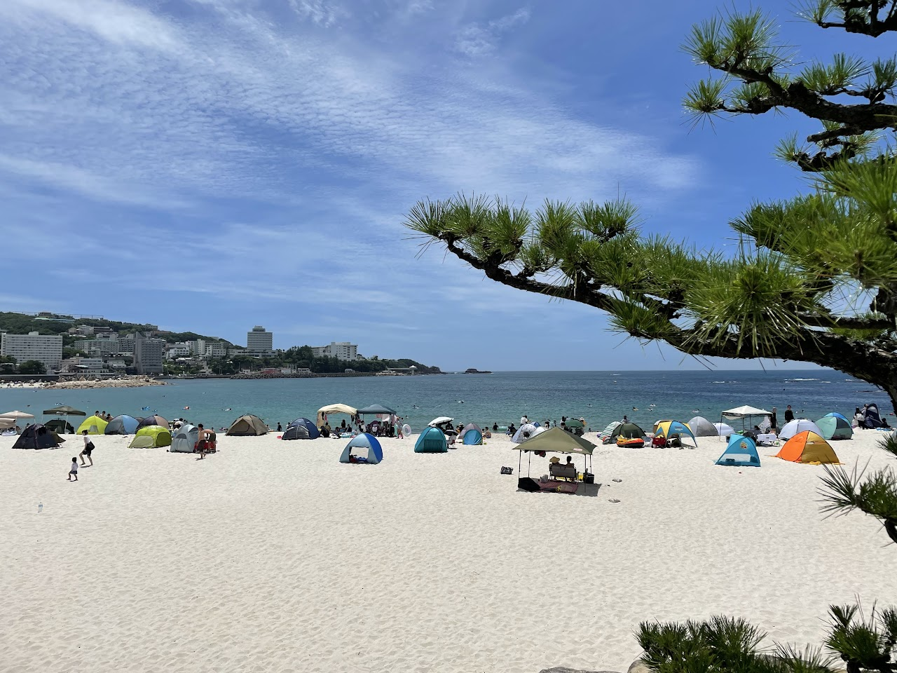

白浜の話
十年来の友人とどこか一泊旅行をしようということになり、夏に日本に帰ってきたからには太平洋を拝みたかったので白浜に行くことにした。
和歌山といえば津村信夫の「父のいる庭」である。くろしおが大阪を出た後はぐっすり眠ってしまって、目が覚めると右手に海が見えた。
「紀の国ぞ
はや
湊につきたり 舟のおじ
かたみに呼びかけ
うっとりと
眸疲れて
父に手をひかれし心地
白浜駅は三次産業の最終形態としての21世紀のリゾート地とよぶにはふさわしくない有人改札駅であったが、アロハシャツを着たJR職員が快く出迎えてくれた。ここからバスでホテルまで移動するわけだが、接続はとてもよく（逆にここで待たされても何もすることがないのだが）すぐに迎えが到着した。乗客は学校帰りの中学生と外国人観光客数組であった。
宿は千畳敷と三段壁に近く、我々は部屋を確認するとすぐに外に出た。海岸線に近づくと、海の香りと共に松の林が現れる。この日の午後は少々雨が肌に触れるような天気で、海もそれに呼応して、まだ大荒れではないが今にも叫び出しそうな様子であった。
「紀の国ぞ
あらぶる海の国ぞ
汝が父の生まれし処ぞ」
千畳敷には運悪くこの日を撮影日に選んでしまった結婚式目前のカップルが複数組見受けられた。

我々は続いて三段壁に移動した。一度内陸側に移動してからもう一度海に向かって適当に歩いて行くと、再び海岸（というか崖）に出たのだが、我々を挟んで海と反対側に柵がある。呑気なもので、私有地か何かかと思って歩いていたのだが、我々が私有地と思っていた方に向かって何か書いてある看板を見つけたので覗いてみると「立ち入り禁止」と書いてある。つまり、我々は入ってはいけないところに入ってしまっていたのである。ここで言及しておくが、我々は明かに人工的な歩道に沿って歩いていたのにもかかわらずそのような場所に侵入してしまったのであり、これは白浜側の構造的欠陥と言わざるを得ないだろう。いずれにせよ、そこから先は明らかに歩行が危険な領域であったため途中で引き返した。
三段壁洞窟に入るには専用の施設を経由しなければならず、その日は既に閉まっていたので、明くる日の朝に再訪することを決めてそこを後にした。天気は結局回復しなかったが、大きく波打つ海は見ていて飽きず、わざわざ来た甲斐があるというものだ。
二日目。約束通り洞窟を訪れた。ここは平安末期に熊野水軍が船を留めていた場所らしい。天気は回復の兆しを見せているものの風はまだ強く、洞窟内部では波が岩に当たりダイナミックな景色を見せてくれた。ホテルのチェックアウトを済ませた後、我々は白良浜に移動した。着いてみるとあらびっくり、快晴である。ビーチで水着も着ずに大きなリュックを持って移動しているのは我々だけであった。千畳敷・三段壁の客層とは打って変わって、浜には禁煙の場所でタバコを吸う者や、わざわざ書くことはしないが同様の雰囲気を纏った若者が多く、示唆に富んでおり興味深かった。

昼ごはんについては特筆すべきことはないだろう。とれとれ市場というところに行った。マーケットとスパが併設されており、地方の典型的な週末娯楽施設であった。観光客が行く必要はないと思う。帰りのくろしおまで時間があったので、午後はもう一度西に戻って、今度は北西の番所山周辺を訪れることにした。バスを降りると円月島が迫る（タイトル写真参照）。ビーチで遊ぶ人も少なく静かな場所であった。島を見てからさてどこに行こうかと思い、近くにあった南方熊楠記念館に入館したのだが、ここは非常に良かった。何せ綺麗で涼しい！手の込んだ熊楠紹介ビデオを見てから彼のNature投稿論文を眺めたあと、展望台に登った。山の中に造られていることもあって、屋上からの眺めは、緑鮮やかな木々と海浜の青・白が混ざり良い景色であった。みどりの国とはこのことである。
あらぶる海の国は
我がためには父の国
汝がためには祖父の国
そが人の御墓かざる
ゆずり葉のみどりの国ぞと